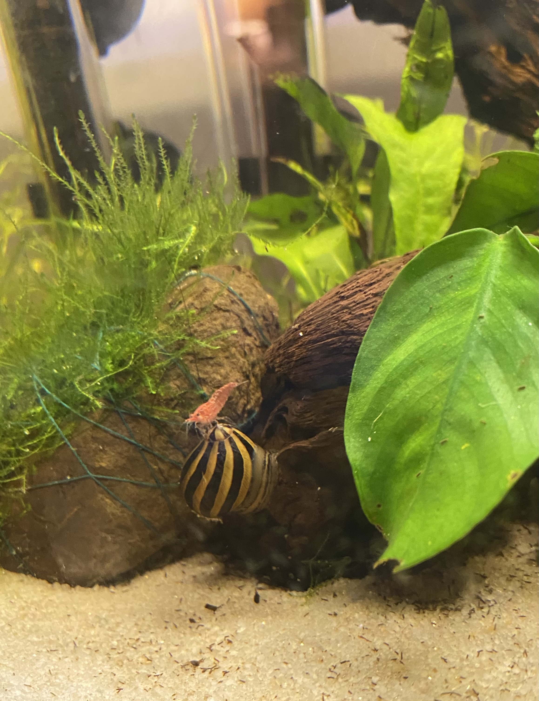

(see titles for fun facts!)
Scindapsus Exotica:
Philodeondron "Florida Ghost":
Philodendron Billietiae:
Here are some pictures of some of them all together:
As you can see I like collecting plants with different colors/patterns.
I have a particular preference for silvery plants.
It's too expensive to a lot of the plants I collect as full plants, so I usually buy cuttings/nodes from other collectors. My favorites are philodendrons and scindapsus varieties.

Please note I am *not* following correct binomial nomenclature for the species and
cultivars listed in this page (Sorry botanists!)
Learn about correct nomenclature here.